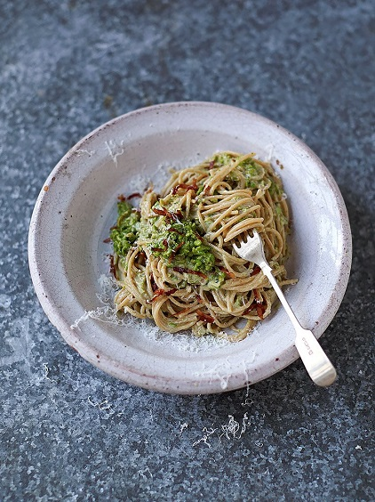

SMOKY BACON, PEAS, ALMONDS & BASIL
“Humble little peas are a source of nine different micronutrients, and are especially high in thiamin, a B vitamin that helps our hearts to function properly ”
| Item 1 | Item 2 | Item 3 | Item 4 | Item 5 | Item 6 | Item 7 | Item 8 |
|---|---|---|---|---|---|---|---|
| Item 1 | Item 2 | Item 3 | Item 4 | Item 5 | Item 6 | Item 7 | Item 8 |
| Item 1 | Item 2 | Item 3 | Item 4 | Item 5 | Item 6 | Item 7 | Item 8 |
Put a pan of boiling salted water on the heat for your pasta, dunk a sieve containing the peas into the water for just 30 seconds, then put aside, leaving the pan on the heat. Very lightly toast the almonds in a dry nonstick frying pan on a medium heat, then blitz until fine in a food processor. With the processor still running, peel and drop in the garlic, a pinch of sea salt, the basil leaves, the finely grated Parmesan and the lemon juice. Blitz until it comes together, then pulse in the peas, to try and keep a bit of texture.
Cook the pasta in the boiling salted water according to the packet instructions. Meanwhile, very finely slice the bacon and fry slowly in the frying pan with 1 teaspoon of oil on a mediumlow heat until golden and crispy, then use a slotted spoon to transfer to kitchen paper, so the flavoursome fat stays in the pan. Scoop in threequarters of your pea mixture to heat through.
Whisk the egg and yoghurt together well. When the pasta’s done, reserving a mugful of cooking water, drain the pasta and toss straight into the pea pan, mixing well, then take the pan off the heat (this is very important, otherwise the egg will scramble when you add it, and we don’t want that). Pour in the egg mixture and toss until evenly coated, silky and creamy, loosening with cooking water if needed. Taste and season to perfection, and serve topped with the remaining pea mixture and the crispy bacon. It might be skinny, but it’s beautifully light and delicious. Enjoy!